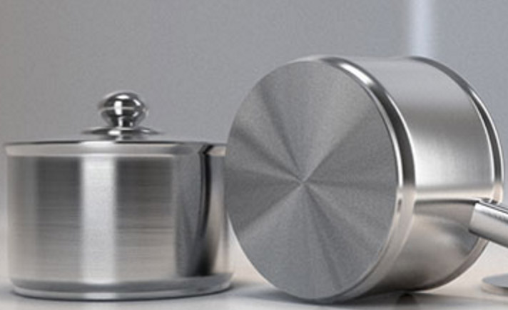
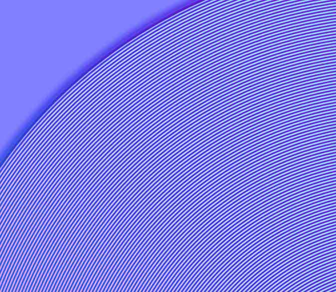
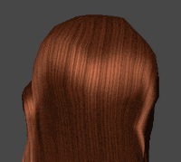
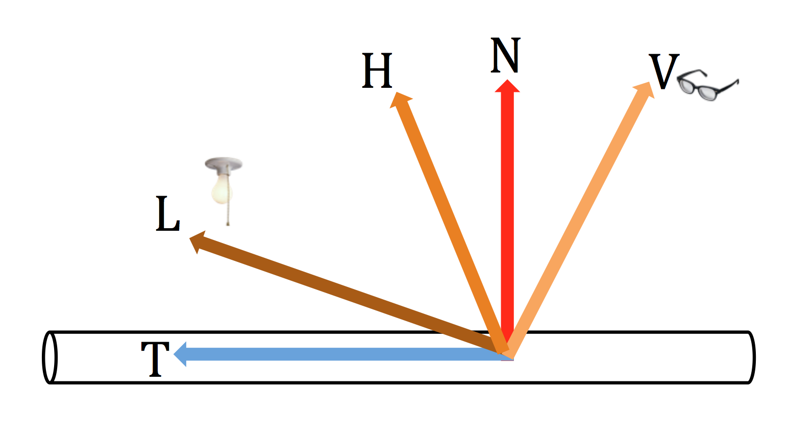
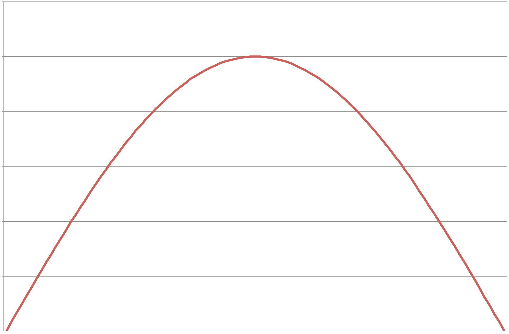
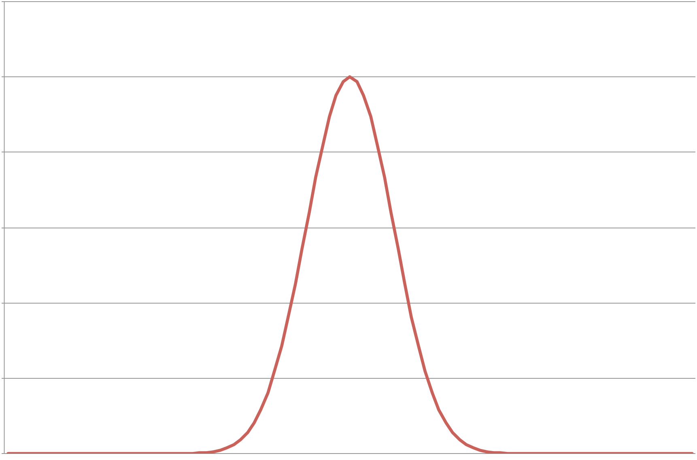
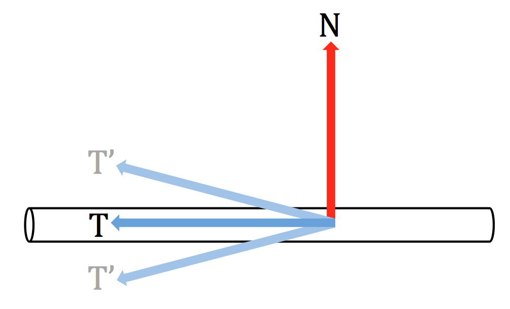

各向异性的头发渲染
2016-8-6
光照渲染中的各向异性（Anisotropic）指的是在不同方向上表现出的光照效果会产生差异，如下图所示：

金属表面反射的高光效果和使用 BlinnPhong （或者类似算法）得到的高光效果有着明显的差异。这主要是由于加工工艺和设计上的要求导致的。就比如上图中的锅底部分就有着非常明显的各向异性光照效果，当进一步放大后，从法线贴图中可以看到，锅底并不是抛光的（我们可以认为，一个完全被抛光的物体表面是光学平面），而是像下面这样：

可能这样设计的目的是为了增加火焰和锅底的接触面积，使其受热更充分更均匀。同时这种类型的凹槽也就造成了各项异性的光照效果。由于凹槽没有小到可以被光线忽略，所以当光线到达物体表面的时候没有办法直接反射出去，而是射入了凹槽中，在凹槽内部经过多次反射，最终才反射出来。现实生活中还有很多物体表面会产生各向异性的光照效果，比如绸缎织物、CD表面、唱片、头发等。
在光照渲染中，显然使用类似 BlinnPhong 这样的光照模型，是无法模拟出这样的效果的，所以需要使用一些 Tricks 来达到目的。这里使用的方法是在 Hair Rendering and Shading 一文中介绍的方法。先上效果图：

常规的光照方程中总是使用法线来参与光照计算，而这里使用切线参与光照计算。下图展示了是所有用到的向量：

T：切线向量。
L：光照向量。
H：L 和 V 的半角向量。H = normalize(L+V)。
N：法线向量。
V：视线向量。
以上各向量都需要是单位向量
设定 T 和 H 的夹角为 $$$ \theta $$$，则：
\[\begin{aligned} 1 &= sin\theta^2 + cos\theta^2 \\ sin\theta^{specularity} &= \sqrt{1-cos\theta^2}^{specularity} \end{aligned}\]
从公式中可以看出当 $$$ \theta $$$ 为 $$$ {\pi \over 2} $$$ 时值达到最大，并使用类似 BlinnPhong 也有的 pow 操作来提亮高光。
| $$$ sin\theta $$$ | $$$ pow(sin\theta, specularity) $$$ |
|---|---|
|  |  |
为了让光照效果产生一些随机性的变化，我们需要对 T 进行随机的旋转操作，如下图所示：

如何对 T 进行旋转呢，方法非常简单，只需要把一个随机长度的 N 和 T 相加即可，将得到的新的向量归一化作为新的 T：
float3 newT = normalize(T + shift * N);
以上就是主要的思路，Hair Rendering and Shading 中还引入了第二层的高光，并使用一张纹理来和第一层高光进行调节。
需要注意的是，如果有必要，我们还需要自己再加上计算平行光照以及头发的 Ambient Occlusion，这是各项异性高光计算所无法做到的。可以将 AO 放在顶点的 color.a 中，与此同时将头发的运动参数放在 color.rgb 中来模拟头发飘动的效果。